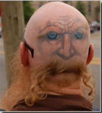

Samedi 29 mars 2014 /par Alan Fox
accueil / articles / comment choisir son tatoueur
La nature permanente du tatouage en fait un acte unique qui doit être mûrement réfléchi pour aboutir à un résultat correspondant aux attentes du candidat au tattoo. Si les futurs tatoués s’accordent généralement à dire que le choix du motif est important, un aspect fondamental est bien trop souvent ignoré : le choix du tatoueur. En effet, choisir un tatoueur est une tâche qui s’avère plus complexe et difficile qu’il n’y parait. Contrairement à certaines idées reçues, tous les tatoueurs ne correspondent pas forcément à ce que n’importe qui peut en attendre.
Voici quelques conseils et données à prendre en compte pour ne pas faire d’erreur, et pour bien choisir son tatoueur en fonction de ses propres attentes :
- Le premier point est bien entendu l’hygiène du salon de tatouage : indispensable, il en va de votre santé : le tatouage est une modification corporelle engendrant des contacts entre des instruments et votre propre sang, il convient donc que les règles fondamentales de l’hygiène du tatouage soient respectées par le tatoueur de votre choix dans son salon. Hors de question de se faire tatouer sur un marché à la va-vite ou par un prétendu tatoueur à domicile ne pouvant justifier des conditions d’hygiène optimales. La réglementation étant encore floue à ce jour, il convient de respecter cette règle fondamentale.
- Le style du tatoueur : l’artiste tatoueur est avant tout un artiste, et non un artisan reproduisant des motifs à la chaîne, même si il s’agit d’un travers dans lequel certains tatoueurs peuvent tomber à la longue. Le tatoueur aura donc souvent un style qui lui est propre, un trait personnel. Si ce n’est pas le cas et que son travail semble stéréotypé, c’est probablement que le tatoueur n’a soit pas encore eu le temps de développer son propre style, qu’il est encore en phase d’apprentissage, soit qu’il est tombé dans une routine “alimentaire” du tatouage, par manque de talent ou par lassitude. Par ailleurs, outre le trait caractéristique du tatoueur, chaque artiste a généralement un style de prédilection : cela peut être un ou plusieurs styles de tatouages : certains tatoueurs sont des spécialistes du tribal, d’autres du tatouage old school, du traditionnel polynésien… Généralement, plus le tatoueur est spécialisé dans un style, plus il sera réticent à accepter des travaux dans un style qui ne lui plait pas, ou qu’il a choisi de ne pas développer. Les spécialistes du tatouage en noir et dégradés de gris par exemples, pratiquent plus rarement le tatouage en couleur, les adeptes des tattoos réalistes ou très détaillés comme peuvent l’être le biomécanique ou bio organique ne sont a priori pas des adeptes des lignes épurées et des aplats de noir du tatouage tribal. En fonction du style du tattoo que vous souhaitez, vous serez donc amenés à éliminer par définition certains tatoueurs de votre liste de choix.
- En plus de son style, la personnalité du tatoueur peut avoir une influence sur le rendu final et surtout votre propre perception de ce rendu. Le tatouage est un acte symbolique important, et la relation qui se tisse entre tatoueur et tatoué peut être fondamentale dans l’accomplissement de cet art, que ce soit par la confiance accordée à l’artiste, ou par le développement de point de vue communs. Les tatoueurs ont par définition fait un choix radical de vie, et ont souvent des personnalités très affirmées. Il est toujours plus agréable de se faire tatouer par une personne ayant les mêmes centre d’intérêt sur lesquels vous allez pouvoir échanger, et créer une complicité au fur et à mesure de votre passage sous ses aiguilles. Bien sur, cela ne s’opère pas en se faisant un petit tatouage sur un coup de tête, pour lequel la séance durera 3 heures, mais plus la pièce est importante, plus le temps passé en commun sera long, et on observe parfois de très belles créations artistiques issues de ces relations privilégiées entre l’artiste tatoueur et son tableau vivant.
- Avant d’arrêter votre choix, il faut franchir le pas la porte du salon de tatouage, discuter de votre projet avec le tatoueur, échanger sur son approche, sa manière de travailler, ce qu’il pense de votre motif si vous avez une base, ou la manière dont il vous guide dans la créaation d’un modèle de tatouage personnalisé. Son implication dans votre projet de tatouage est souvent un indicateur important qui doit influencer votre choix. Un tatoueur doit dans l’idéal pouvoir exprimer son art, et réaliser votre tatouage en y voyant un challenge artistique.
- Avoir la possibilité de voir des tattoos déjà réalisés par le tatoueur, que ce soit en photo (la plupart des tatoueurs possèdent dans leur boutique, en plus de leur planches de flashs, un book de leurs réalisations), mais l’idéal est de pouvoir voir en vrai ses tatouages, particulièrement si ils sont un peu anciens, afin de voir si la qualité du trait tient et reste bonne après quelques années.
Une fois ces points vérifiés, il est important de ne pas se laisser impressionner par la distance, et ne surtout pas tomber dans le piège de la commodité consistant à choisir le tatoueur en fonction de sa situation géographique. Un tatouage reste pour toute une vie et un mauvais choix sur la personne qui vous encrera cette pièce peut jouer un rôle négatif dans la perception future que vous aurez de votre tatouage. Lorsque votre choix est fait, vous êtes prêts à passer sous les aiguilles du tatoueur que vous avez choisi.